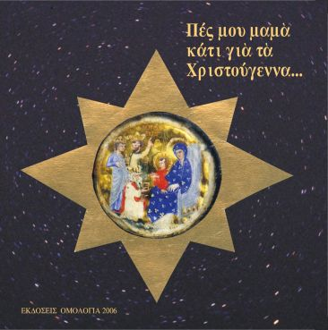

Πες μου μαμά κάτι για τα Χριστούγεννα
«Μαμά, πού ήταν ο Ιησούς όταν ήταν μικρός σαν εμένα;» Από τον Ευαγγελισμό ως τη φάτνη της Βηθλεέμ — η αληθινή ιστορία ενός Παιδιού που ήρθε να αλλάξει τον κόσμο. Άκουσέ την μαζί με τη μαμά σου — γιατί μερικές ιστορίες αξίζει να τις ακούς αγκαλιά.